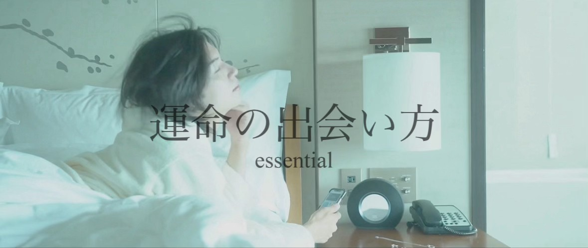
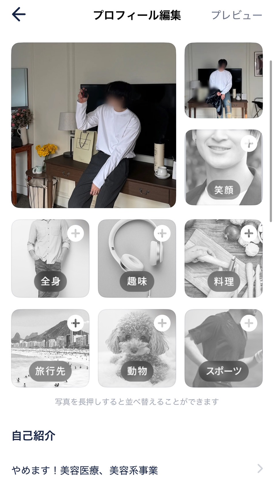
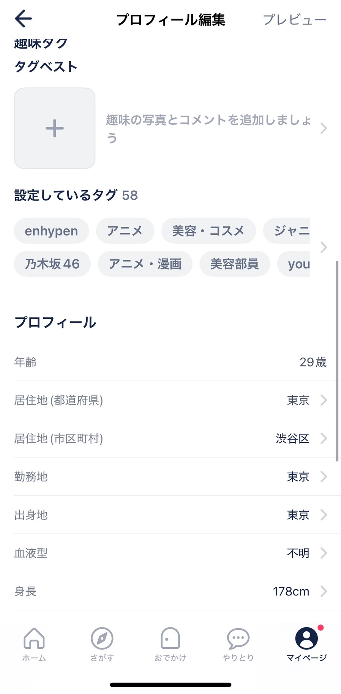
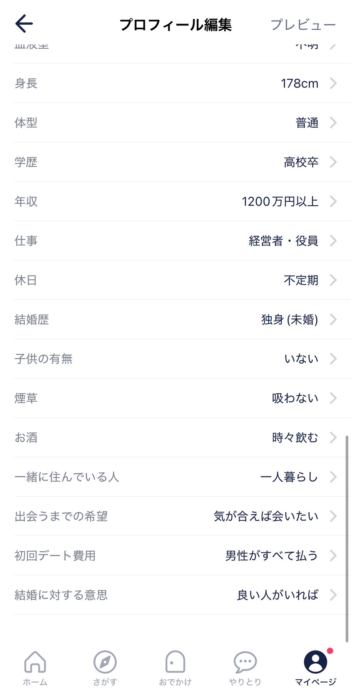
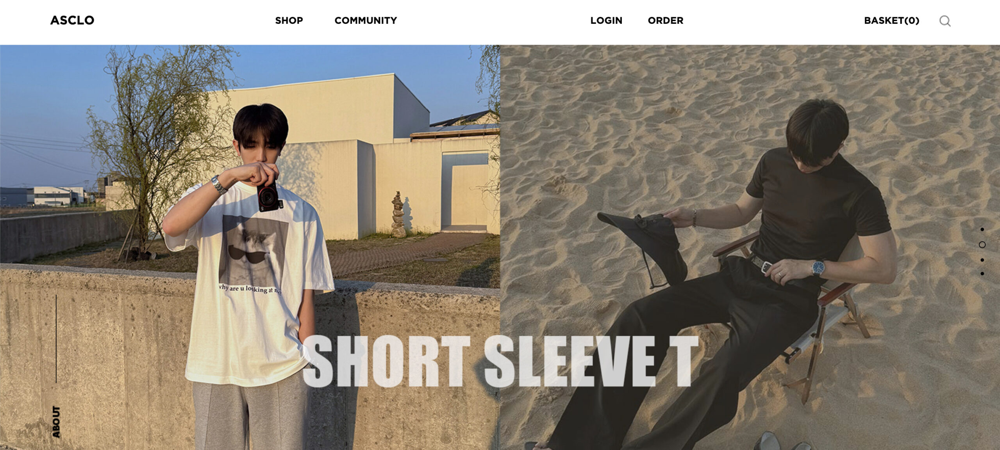

運命の出会いを信じているか? 俺はマッチングアプリがなければホストは月1,700万行かず、女性経験も積めなかっただろう。ストリートができなければシャンパンタワーをすることもなかった。今日俺の出会い方、全て伝授する。
このセクションの目次
- 最強のマッチングアプリ
- amiプロフィール例
- 最恐のアプリ運用：匿名運用
- 顔見たいと言われた時の対処
- タップル運用
- with運用
- pairs運用
- 路上のすれ違いを運命の出会いに
最強のマッチングアプリ
正直、今からやるなら・タップル・with 以外やらなくていいです。pairsはアプリ機能的にwithに劣るし、東カレは一見綺麗な子は多いように思えるが、写真より可愛い子は元アイドルの子以外来たことがありません。※10人中1人くらいの割合。若くて可愛い子がアプリの中でも多いです。コンサルティングで8年以上触っているので間違いないです。
全てのアプリに精通し、まず知るべきは以下の通りです。
withは1日目・タップルは1日目の運用が大事（アルゴリズムが新規を優遇する）
・プロフィール写真
センターピンは女性にとって「理想の男性像か？」という認識。身長、職業、趣味が反映できたら最終的に写真の質で決まる
・プロフィール文章
短文（1〜2行）の方が高確率でマッチする傾向。長文よりも写真で判断される
・アプリ初期プロフ設定・タグ設定・検索設定
ターゲットになる女性が検索する設定を自分のプロフに反映させることが重要
・実際の運用・可愛い子の見つけ方
ランキング・都道府県別・いいね順などでフィルタリング。新規プロフは避けてある程度回転している女性を狙う
・課金アイテム
アプリによって異なるが、初期段階では最小限の課金で運用可能
最後の方に動画で解説しましたので最後までみてください。
amiプロフィール例
プロフィールに関して常に研究し、短文・長文でデータを取りました。センターピンは女性にとって「理想の男性像か？」ということです。身長、職業、趣味… それさえ反映できたら、最終、写真がよければok。つまりは、写真が最も大事ということですね。
【実際の例1】
「コンサルティング事業のサポート及び営業として動いています。筋トレ・人間観察・思考を高めることにハマっています。連絡頻度は人それぞれですが、返信は必ず返します。会う前に電話で話をするほうが出会いが確実になると思っています。」
ポイント・注意
この長さで運用していた時期もありました。しかし効率を考えると、短文の方が反応率が高いです。
【実際の例2】
「上場企業のメーカーで営業をしています。趣味は筋トレとドライブ。電話で話してから会いましょう。」
タップル短例
「営業｜筋トレ｜ドライブ好き」

このようにアプリによって長文で行っていたときもありました。ですが現在は、基本的なプロフィール設定に、オリジナルのとこは１行のみ。
最恐のアプリ運用：匿名運用
現在はこの運用を推奨しています。顔を出さないことで、写真撮影コスト削減・彼女バレ、身バレリスク・退会後、即別人で転生できる…等、あらゆるメリットがあり、リスク回避になります。何より楽です。タップルもwithもこれで充分、通用します。具体的には韓国アパレルサイトの"ASCLO"から写真を持ってきて、顔にモザイクをかけて運用します。
グレーかもしれませんが、結果が全てです。実際にこの方法で質の高い女性との出会いを確保できています。
顔見たいと言われた時
過去自分が運用した実録も残しておきます。
この時にようやく顔を開示します。その時までにかっこいい写真を用意しておきましょう。どのみちリアルもかっこよくないとデートで終わり、意味ないので。



路上のすれ違いを運命の出会いに
… .. essential｜ストリート マインド編 続きは気になる人は是非。
メンタル弱い人はできないし、やる必要もないので知りたい人聞いてください。路上で0→1が作れる人はかなりノンバーバルが強くなります。最高の出会いを作りましょう。

動画解説
※動画は順番に視聴してください。